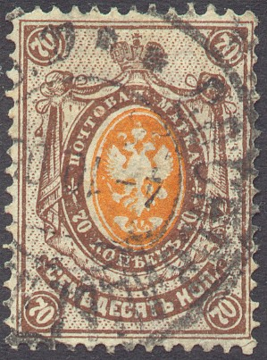
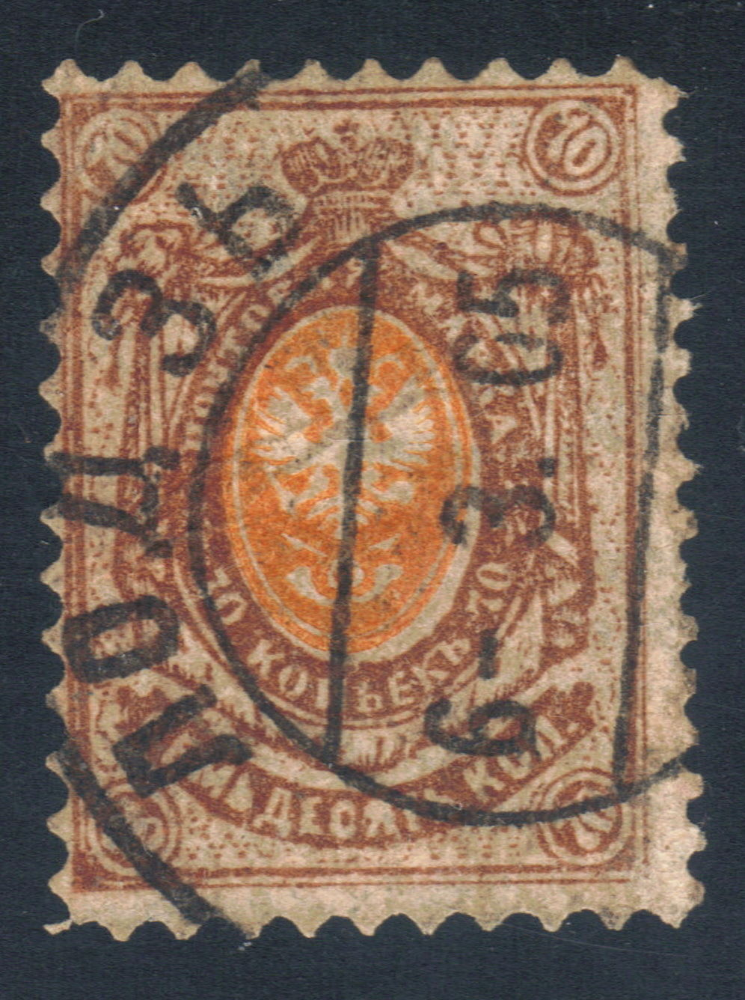
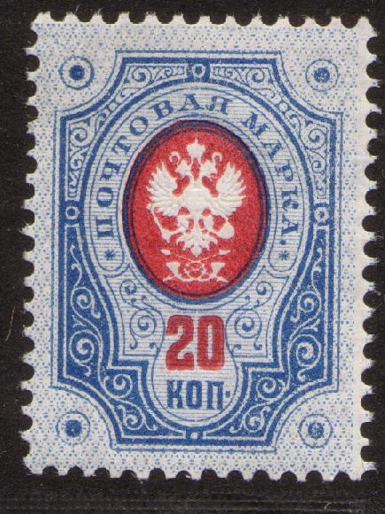
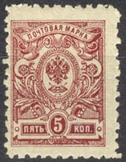
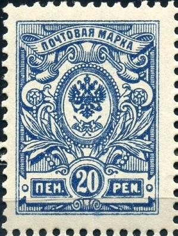
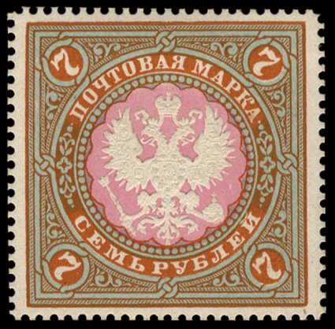

{kind=link}

Return To Catalogue - Russia overview - Eagle issues, small sizes 1858-1922, part 1 - Eagle issues, large sizes
Note: on my website many of the
pictures can not be seen! They are of course present in the
catalogue;
contact me if you want to purchase the catalogue.
Without thunderbolts below the eagle
14 k blue and red 35 k lilac and green 70 k brown and orange
A surcharged stamp '7' on 14 k should have been issued in the Causasus. I have never seen this stamp, it is very rare (bogus?).
Value of the stamps |
|||
vc = very common c = common * = not so common ** = uncommon |
*** = very uncommon R = rare RR = very rare RRR = extremely rare |
||
| Value | Unused | Used | Remarks |
| Watermark 'Wavy lines', perforated 14 1/2 (1883) | |||
| 14 k | * | c | |
| 35 k | * | * | |
| 70 k | ** | * | |
With thunderbolts below the eagle
14 k blue and red (1889) 15 k lilac and blue (1905) 25 k green and violet (1905) 35 k lilac and green (1889) 70 k brown and orange (1904)
Value of the stamps |
|||
vc = very common c = common * = not so common ** = uncommon |
*** = very uncommon R = rare RR = very rare RRR = extremely rare |
||
| Value | Unused | Used | Remarks |
| Watermark 'Wavy
lines', perforated 14 1/2 (1889) Horizontally or vertically laid paper |
|||
| 14 k | c | vc | |
| 15 k | * | c | 1905 |
| 25 k | * | c | 1905 |
| 35 k | * | c | |
| 70 k | ** | c | |
With varnished 'Lozenges' pattern on the front (1909) |
|||
| 14 k | c | c | |
| 15 k | c | vc | |
| 25 k | c | vc | |
| 35 k | c | vc | |
| 70 k | c | vc | |
These stamps with small circles added in the design or with value in 'PEN' or 'MARKKA' were issued for Finland.
Imperforated (1915, with thunderbolts)


15 k lilac and blue 25 k green and violet 35 k brown and green 70 k brown and red
Value of the stamps |
|||
vc = very common c = common * = not so common ** = uncommon |
*** = very uncommon R = rare RR = very rare RRR = extremely rare |
||
| Value | Unused | Used | Remarks |
With varnished 'Lozenges' pattern on the front |
|||
| 15 k | vc | c | |
| 25 k | c | * | |
| 35 k | c | c | |
| 70 k | c | * | |
Surcharged (perforated, with thunderbolts, 1916)

'k20k' on 14 k blue and red
Value of the stamps |
|||
vc = very common c = common * = not so common ** = uncommon |
*** = very uncommon R = rare RR = very rare RRR = extremely rare |
||
| Value | Unused | Used | Remarks |
With varnished 'Lozenges' pattern on the front |
|||
| 20 k on 14 k | c | c | |


Inverted center on a 14 k, 15 k and a 25 k stamp (genuine)
According to the 'Russian post in the Empire, Turkey, China and the post in the kingdom of Poland' by S.V.Prigara postal forgeries of the perforated 70 k exist (thunderbolts issue), some with a Lodz cancel.

The Lodz postal forgery.

Stamps with this overprint were used in Ukraine
Perforated


4 k red 10 k blue 20 k blue and red 50 k lilac and green
Value of the stamps |
|||
vc = very common c = common * = not so common ** = uncommon |
*** = very uncommon R = rare RR = very rare RRR = extremely rare |
||
| Value | Unused | Used | Remarks |
| Watermark 'Wavy
lines', perforated 14 1/2 (1889) Horizontally or vertically laid paper |
|||
| 4 k | c | vc | |
| 10 k | c | vc | |
| 20 k | * | vc | |
| 50 k | ** | c | |
Imperforate (1915)

20 k blue and red 50 k lilac and green
Value of the stamps |
|||
vc = very common c = common * = not so common ** = uncommon |
*** = very uncommon R = rare RR = very rare RRR = extremely rare |
||
| Value | Unused | Used | Remarks |
| Watermark 'Wavy
lines', perforated 14 1/2 (1889) Horizontally or vertically laid paper |
|||
| 20 k | c | * | |
| 50 k | c | c | |

Inverted background on a 20 k stamp (genuine)
Proofs

Stamps with circles added to the design were issued in Finland.
Perforated


1 k yellow 2 k green 3 k red 4 k red (slightly different design) 5 k lilac 7 k blue 10 k blue (design as 4 k)
Value of the stamps |
|||
vc = very common c = common * = not so common ** = uncommon |
*** = very uncommon R = rare RR = very rare RRR = extremely rare |
||
| Value | Unused | Used | Remarks |
With varnished 'Lozenges' pattern on the front, perforation 14 1/2 |
|||
| 1 k | vc | vc | |
| 2 k | vc | vc | |
| 3 k | vc | vc | |
| 4 k | c | vc | |
| 5 k | vc | vc | |
| 7 k | c | vc | |
| 10 k | c | vc | |
Imperforate (1915)


1 k yellow 2 k green 3 k red 4 k red 5 k lilac 10 k blue
Value of the stamps |
|||
vc = very common c = common * = not so common ** = uncommon |
*** = very uncommon R = rare RR = very rare RRR = extremely rare |
||
| Value | Unused | Used | Remarks |
| 1 k | vc | vc | |
| 2 k | vc | vc | |
| 3 k | vc | vc | |
| 4 k | c | c | |
| 5 k | vc | vc | |
| 10 k | * | * | |
Surcharged (1916, perforated)

'kop 10 kop' on 7 k blue
Value of the stamps |
|||
vc = very common c = common * = not so common ** = uncommon |
*** = very uncommon R = rare RR = very rare RRR = extremely rare |
||
| Value | Unused | Used | Remarks |
| 10 k on 7 k | c | c | |
The imperforate 2 k and 5 k stamps were rouletted in Georgia (so-called Tiflis issue):

(Locally perforated stamp of Tiflis)
(I've been told that this is a postal forgery made in 1909 of the
7k blue, printed on
thin paper with varnish lines)

Another postal forgery of the 7 k value

Postal forgery of Lodz of the 10 k value. The left '1' appears
too small. The lettering is badly done.

These samps with inscription in "PEN" were issued for
Finland.
 
Essays made in 1884.
Essays of a 2 k stamp, made in 1902

Essay made in 1902 of a 3 k stamp.

Another essay made in1902: 5 k brown and yellow. I've also seen
it in the colors 5 k blue and orange, 5 k blue and green and 5 k
red and green.
Essays made in 1902; 7 k blue and orange, I've also seen this
essay in the color 7 k blue, 7 k black on orange and 7 k black on
yellow.
{kind=link}
{kind=link}
{kind=link}
{kind=link}
{kind=link}
{kind=link}